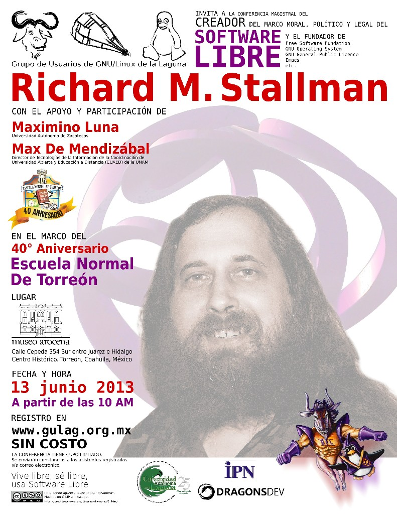

salazarysanchez
Mejoremos el mundo y nuestras vidas un Hack a la vez.
Entradas
Sobre la sección Bytes Libres
Desde éste año, 2014, los miembros del GULAG han empezado a escribir en la sección Bytes Libres en el periódico El Siglo de Torreón.
Convertir odt/ods en pdf con LibreOffice desde terminal
En Libreoffice, desde antes que lo implementaran en Microsoft Office, se puede guardar el documento de trabajo en formato pdf (sigla del inglés portable document format) con solo presionar un icono.
Ayer me surgió la pregunta: “¿Se podrá desde terminal hacer lo mismo?”. La lógica apuntaba a que si se podía.
FLISOL 2014

"El Viaje de los Cantores" 2014
Desde diciembre del 2009 y hasta septiembre del 2010 se celebraron más de 50 representaciones de “El Viaje de los Cantores”, de Hugo Salcedo. Para celebrar la función número 50 se tuvo como padrinos a personalidades como la actriz Luisa Huertas y Luz Emilia Aguilar Z., grandes personalidades del ambiente teatral mexicano.
Día Mundial del Teatro 2014
El Día Mundial del Teatro fue creado en 1961 por el Instituto Internacional del Teatro (ITI). Se celebra anualmente el 27 de marzo por los Centros ITI y la comunidad teatral internacional. Varios eventos teatrales nacionales e internacionales son organizados para conmemorar esta ocasión. Uno de los más importantes es la circulación del Mensaje Internacional del Día Mundial del Teatro a través del cual, por invitación del ITI, una figura de talla mundial comparte sus reflexiones sobre el tema del Teatro y una Cultura de Paz. El primer Mensaje Internacional del Día Mundial del Teatro fue escrito por Jean Cocteau (Francia) en 1962.
Pastorela de la esperanza - 2014 (I)
Por que el público así lo pide, continuamos con la presentación de la obra “Pastorela de la esperanza” de Miguel Sabido, obra que es presentada bajo la dirección de Gerardo Moscoso C., con la brillante participación de 16 actores y actrices de todas las edades, y con un servidor como asistente de dirección y actuando.
Calaverita para Stallman
En muchas partes del mundo se recuerda a los difuntos de una manera u otra; en México se tiene la tradición del día de los muertos (festividad declarada por la UNESCO Patrimonio Cultural Inmaterial de la Humanidad), en donde se levantan altares dedicados a determinada persona ya fallecida y la creación de calaveritas a personas (por lo general) vivas. Éstas últimas, las calaveritas, son versos a modo de epitafio burlesco y como modo de expresar ideas o sentimientos que en otras oportunidades sería difícil decir.
Stallman en Torreón - Resumen
